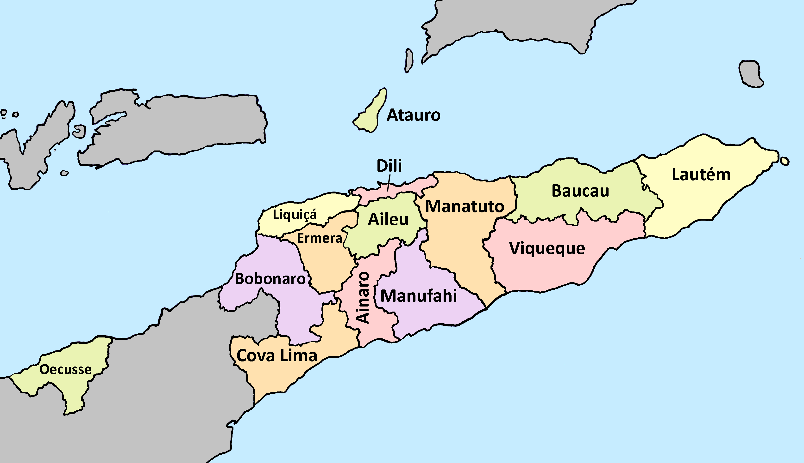

Unofficial · AI-compiled · Edition 2026-Q3-draft
An orientation document for anyone considering or delivering health work in Timor-Leste. It is not an official document and carries no government, WHO or institutional sanction. Its purpose is to help you act in line with national priorities and avoid duplicating work others are already doing.
Reviewed by Dr Natarajan Rajaraman on 2026-08-25.
The text is drafted and updated by an AI agent from the cited sources, and reviewed by the named editor, who takes editorial responsibility for this edition.
Text updated 2026-08-25 · reviewed 2026-08-25
A concise, sourced orientation to health and the health system of Timor-Leste, for anyone — Timorese or foreign, government, NGO, clinical, academic or funder — deciding whether and how to act.
Its job is narrow: to help you act in line with national priorities and avoid duplicating work already under way. Timor-Leste is a small country with a large number of visiting actors, and the commonest failure is not bad intent but arriving without knowing what already exists.
Not official. Not endorsed or checked by the Ministry of Health, WHO, or any government or institution. It is a private compilation of public sources.
Not a health system profile or review. Those terms belong to institutional series — WHO's country profiles, and the European Observatory's Health Systems in Transition — which imply peer review and completeness this cannot claim. This is a landscape scan: shorter, current, and explicit about its limits.
Not a substitute for talking to Timorese counterparts. It tells you enough to ask better questions, not what a particular municipality needs this year.
Everything here is drawn from official and published sources. Real practice can differ from them substantially, and in Timor-Leste it often does.
Always check with your local contact which "requirements" are genuinely required, which are enforced loosely or inconsistently, and which have quietly lapsed. A rule that appears in a decree may not be applied; a step that appears nowhere in writing may be essential. Documents cannot tell you which is which — people in-country can.
This is the single most important caveat in the document, and it applies to every section, most sharply to governance (§4) and to the approval requirements in §6.
The text is drafted and updated by an AI agent from the sources cited in each section, then reviewed by a named human editor. The banner above tells you which state this edition is in — including, honestly, when the text has changed since the last review.
Refreshed roughly every 90 days. Numeric indicators are re-pulled from source APIs each cycle rather than recalled; cited pages are re-fetched and compared rather than pinged. §10 explains why both distinctions turned out to matter.
Every substantive claim carries its source. Unverifiable claims are marked UNVERIFIED rather than quietly asserted or dropped. Where two authoritative sources disagree, both are given and the disagreement is reported as a finding — which happens more often here than you would expect, and in one case (§3) is more useful than either number.
Written in English, with the executive summary also in Tetun by machine translation, labelled as such. The named editor reviews the English only.
Where a source exists only in Tetun, Portuguese or Indonesian, the citation says so. Surfacing material unavailable in English is part of the point: much of the Timorese policy record is published in Portuguese and Tetun only, and is effectively invisible to English-speaking partners.
Only organisational contact details appear here, as published by the organisations themselves. No named individual's personal mobile or private email, even where publicly findable.
If you are listed and something is wrong, or you would rather not be listed, use the suggestions box at the foot of the page.
Cite the edition and the DOI. Sources belong to their publishers; follow the citation rather than relying on the summary here.
Text updated 2026-08-25 · reviewed 2026-08-25
Timor-Leste is a country of roughly 1.4 million people with a tax- and petroleum-funded health system that is free at the point of care, delivered through six hospitals, about 71 community health centres and 344 health posts, and staffed by a workforce whose doctors were very largely trained in Cuba. It became ASEAN's eleventh member on 26 October 2025 and was certified malaria-free by WHO in July 2025.
The operative national plan is the National Health Sector Strategic Plan II (2020–2030). The best single current description of the system is the WHO Country Cooperation Strategy 2026–2030, published March 2026.
1. Out-of-pocket spending is about 7% of current health expenditure (2023) — the lowest in ASEAN and among the lowest anywhere in the world. Public care is genuinely free at the point of use. If your intervention design assumes user fees, cost-recovery or insurance, it does not fit this country. There is no social health insurance.
2. Do not benchmark Timor-Leste on health spending as a share of GDP. The ratio moved 4.92% → 7.46% → 9.60% across 2021–2023 while total health spending went US$178M → $240M → $200M. It moved almost entirely because petroleum GDP fell 43%, not because health spending changed. Use US$ per capita (US$144 in 2023) and health as a share of government expenditure (9.16%) instead. §5.
3. Two WHO products disagree about health spending by roughly 60%, and one WHO figure in wide circulation (11.4% of GDP) cannot be reproduced from any published primitive. §5 sets out which to use and why.
4. Outcomes, not inputs, are where Timor-Leste is the regional outlier. It has ASEAN's worst under-5 mortality (47.6 — next worst 36.9) and maternal mortality (192), against mid-pack spending and workforce density and the region's best financial protection. The gap between ordinary inputs and worst-in-region outcomes is itself the finding. §3.
5. The single most useful data finding in this document is a contradiction. Skilled birth attendance is reported by the routine health information system as 92% (2020) falling to 56.7% (2024), and by the Demographic and Health Survey as 60% (2016) rising to 78% (2025–26). These do not merely differ — they move in opposite directions. Do not pick a number. §3.
6. The Ministry of Health has no working website — its real public channel is Facebook. The ministry page has 139,000 followers and posts near-daily, and is by a wide margin the most current published source on Timorese health policy. The website returns 502; a separate live systems portal at apps.ms.gov.tl, linked from nowhere, hosts the full national strategic plan. Absence of a website is not absence of an institution — a pattern that repeats throughout. ⚠️ Two decoy pages rank above the real one in search, and one of them is Portugal's health ministry. §4.
7. There is no "who does what where" dataset for Timor-Leste and no health-cluster partner list, because the country is not an active humanitarian-cluster operation. The actor map in §8 had to be built by hand and is maintained by hand. It is the least complete and most valuable section here.
8. The binding workforce constraint is postgraduate and distributional, not headcount. Workforce density is mid-pack for ASEAN — ahead of Thailand and Indonesia on physicians per person. Six institutions produce 800+ new health professionals a year, but there is no domestic specialist training pipeline of scale. US$19.3 million — 14% of the entire health budget — leaves the country to pay for Timorese patients treated abroad. §5, §6.
9. Two of the country's three medical schools began teaching in 2021 and 2024 and have not yet graduated anyone. One of them recruits substantially from overseas. Gross graduate output is therefore a poor proxy for domestic workforce supply. §6.
10. Training and research are gated. All clinical research, and all new training longer than three days delivered to health professionals, requires approval from INSP-TL, the National Institute of Public Health. Partners planning to teach should treat this as the first step, not a formality. §6.
11. The current flagship primary care initiative is PIS — Programa Integradu Saúde — an integrated package of services delivered closer to where people live, linking health systems, facilities, national programmes, community and specialist care. Where WHO and others write "integrated health services programme" or "the new integrated health policy", they mean PIS. Ask where your activity sits within it. §7.
12. A new tier of municipal hospitals is planned but does not yet exist. NHSSP II sets out a service-delivery structure including municipal hospitals between the regional and community-health-centre levels. Plan against the system as it is, while knowing where it intends to go. §4, §7.
It does not assess what is working, rank where help is most needed, or recommend what you should do. That section — gaps and opportunities — is deliberately left out of this edition: it would be judgement rather than sourced description. If it appears, it will carry a named author.
It is also weakest exactly where it is most valuable: the actor map and contact details in §8 go stale faster than anything else here, and a meaningful share of Timorese health organisations have no working website at all. Treat §8 as a starting point for enquiry, and tell us when it is wrong.
Text updated 2026-08-25 · reviewed 2026-08-25
TETUN: Rezumu ne'e mak tradusaun makina. Editór umanu ne'e la konfirma tradusaun ida-ne'e. Se hakarak informasaun ne'ebé loos, favór ida lee versaun Inglés iha leten. Se ita-boot hetan sala iha tradusaun ne'e, favór ida hatete mai ami liu husi ligasaun korresaun iha okos.
ENGLISH: This summary is a machine translation. The named human editor has not verified it and does not certify it. Where precision matters, read the English version above. If you find an error in this translation, please tell us via the correction link in the footer.
Timor-Leste iha populasaun besik millaun 1.4. Sistema saúde nasionál sei selu husi impostu no osan petróleu, no serbisu saúde iha setór públiku gratuita ba populasaun — ema la selu bainhira simu tratamentu.
Sistema ne'e inklui ospitál 6, sentru saúde komunitáriu besik 71, no postu saúde 344. Maioria médiku Timor-oan simu formasaun iha Kuba.
Timor-Leste sai membru ASEAN nian ba dala-11 iha 26 Outubru 2025, no OMS fó sertifikadu katak Timor-Leste livre ona husi malária iha Jullu 2025.
Planu nasionál ne'ebé sei válidu mak Planu Estratéjiku Nasionál Setór Saúde II (2020–2030).
1. Gastu husi ema rasik (out-of-pocket) mak porsentu 7 de'it husi gastu saúde totál (2023) — ida-ne'e ki'ik tebes kompara ho mundu tomak. La iha seguru saúde sosiál iha Timor-Leste. Se ita-boot nia programa presiza ema selu ba serbisu saúde, programa ne'e la kombina ho sistema ne'e.
2. Labele uza "gastu saúde nu'udar porsentu husi PIB" atu kompara Timor-Leste ho nasaun seluk. Númeru ne'e sae husi 4.92% ba 9.60% entre 2021 no 2023, maibé sae tanba PIB petróleu tun ho 43%, la'ós tanba gastu saúde aumenta. Uza dólar Amerikanu kada ema (US$144 iha 2023) no porsentu husi gastu governu nian (9.16%).
3. Dadus kona-ba partu ho asisténsia profisionál kontraditóriu. Sistema informasaun rutina hatete 92% (2020) tun ba 56.7% (2024); peskiza uma-kain (DHS) hatete 60% (2016) sae ba 78% (2025–26). Númeru rua ne'e la'ós de'it diferente — sira la'o ba direksaun kontráriu. Labele hili númeru ida de'it.
4. Ministériu Saúde la iha website públiku ne'ebé funsiona. Maibé portál apps.ms.gov.tl funsiona no iha dokumentu importante barak, inklui Planu Estratéjiku Nasionál kompletu, iha lian Inglés no Tetun.
5. Formasaun no peskiza presiza aprovasaun husi INSP-TL. Peskiza klínika hotu-hotu, no formasaun foun ne'ebé naruk liu loron 3 ba profisionál saúde, presiza aprovasaun husi Institutu Nasionál Saúde Públika (INSP-TL). Ba parseiru ne'ebé mai hanorin, ida-ne'e mak dalan primeiru.
6. Konstranjimentu boot mak formasaun pós-graduasaun, la'ós graduasaun. Institutu 6 prodús profisionál saúde foun liu 800 kada tinan, maibé la iha programa formasaun espesialista iha rai laran. US$19.3 millaun — 14% husi orsamentu saúde — sai husi rai atu selu tratamentu Timor-oan sira nian iha rai liur.
Dokumentu ne'e la'ós dokumentu ofisiál. Ministériu Saúde, OMS, ka instituisaun governu ida la aprova ka la revee dokumentu ne'e. Ne'e kompilasaun privadu husi fonte públiku.
Testu ne'e ajente AI mak hakerek no atualiza, no editór umanu ho naran mak revee. Aviso iha pájina nia leten hatete ita-boot edisaun ida-ne'e nia estadu — inklui bainhira testu muda tiha ona maibé editór seidauk revee.
Se ita-boot hetan sala iha dokumentu ne'e — liuliu kona-ba ita-boot nia organizasaun rasik — ka ita-boot lakohi nia naran iha lista ne'e, favór ida uza ligasaun korresaun iha okos.
Text updated 2026-08-25 · reviewed 2026-08-25
The Democratic Republic of Timor-Leste occupies the eastern half of the island of Timor, plus the enclave of Oecusse on the north-west coast, and the islands of Atauro and Jaco. Population is approximately 1.4 million. It restored independence in 2002 and is one of the youngest states in the world, with a correspondingly young population and a health system built almost entirely since 2002.
Terrain matters more here than in most country profiles. The country is mountainous, the road network is poor and seasonally interrupted, and a substantial part of the population lives in areas that are hard to reach for part of the year. Any service-delivery or outreach plan that does not account for this will underestimate its own logistics.
⚠️ This is commonly got wrong, including in recent partner documents.
Timor-Leste has 13 ordinary municipalities plus the Special Administrative Region of Oe-Cusse Ambeno (RAEOA) = 14 municipality-level units. Atauro separated from Dili to become a municipality in its own right on 1 January 2022. WHO's Country Cooperation Strategy 2026–2030 uses "14 municipalities" throughout.
Documents written before 2022 — and a surprising number written after — say "12 municipalities plus RAEOA" or "13 districts". If a partner document says 12, it predates 2022 or copied something that did.

Note Atauro shown as a unit in its own right - it separated from Dili on 1 January 2022, and many circulating maps still show it inside Dili and count 13 units. Note also that Oecusse (RAEOA) is a physically separate enclave inside Indonesian West Timor, which is why it is a separate negotiation as well as a separate administration (§2).
Source: J. Patrick Fischer, adapted by Smjg, via Wikimedia Commons — licensed CC BY-SA 3.0. Retrieved 2026-08-25.
RAEOA is not merely a municipality. It is a special administrative region with its own authority and its own line in the national health budget, and it operates with a degree of autonomy that affects how programmes are agreed and delivered there. Treat Oecusse as a separate negotiation.
Below municipality level, the administrative chain runs through administrative posts, sucos (villages) and aldeias (hamlets). Health facilities and community health volunteers are organised against this structure, so it is worth learning.
Timor-Leste has two official languages — Tetun and Portuguese — and two working languages, Indonesian and English, recognised in the constitution. More than twenty indigenous languages are spoken.
The practical position for a visiting partner:
This multilingual record is a real barrier to partners, and surfacing material that exists only in Tetun or Portuguese is one of this document's stated purposes. Where a source is not in English, the citation says so.
Text updated 2026-08-25 · reviewed 2026-08-25
Health status figures for Timor-Leste come from three systems that do not agree with each other: the routine health information system (TLHIS/HMIS), periodic household surveys (the Demographic and Health Survey, and national nutrition and NCD surveys), and international modelled estimates (WHO, World Bank, UN IGME).
Where they disagree, this document gives all of them. Picking one silently would be the easier and less honest option, and in at least one case below the disagreement is more informative than any single number.
⚠️ A note on freshness. WHO's Global Health Observatory refreshes per indicator, and the spread is wide — life expectancy was last refreshed in August 2024 while workforce data was refreshed in January 2026. A stale indicator looks identical to a fresh one in the data. Where the source's own refresh stamp is known, it is given.
This is the single most useful data finding in this document.
Do not pick a number. These do not merely differ in level - they contradict each other in direction over an overlapping period. Both are cited by WHO. Presenting this as a data-quality finding is worth more to a partner than either figure.
Source: WHO Country Cooperation Strategy 2026-2030 §2.4.1; TLDHS 2025-26 Key Indicators Report.
| Source | Figure | Direction |
|---|---|---|
| HMIS (routine reporting) | 92% (2020) → 56.7% (2024) | Falling steeply |
| DHS (household survey) | 60% (2016) → 78% (2025–26) | Rising steeply |
These do not merely differ in level. They move in opposite directions over an overlapping period.
Both are cited by WHO. One of them is wrong, or both are measuring something different from what their labels suggest — a plausible explanation is a change in what the routine system counts or how completely facilities report, but this document does not know, and says so.
Do not use a single skilled-birth-attendance figure for Timor-Leste in a proposal, a needs assessment or a baseline. If a funder requires one, cite both and state the discrepancy. For a partner deciding where to put effort, the fact that the country's two headline maternal-health data systems contradict each other is worth more than either number — it is itself a finding about where investment might go.
Sources: WHO CCS 2026–2030 §2.4.1; TLDHS 2025–26 Key Indicators Report.
⚠️ The DHS API will serve you ten-year-old data. A new TLDHS 2025–26 exists and its Key Indicators Report was launched 11 June 2026, but the DHS Program API still returns exactly two Timor-Leste surveys, 2009 and 2016, and the newest fertility figure it will give you is 4.2 from 2016. Anything automated against that API will confidently publish decade-old numbers. The full TLDHS 2025–26 report was due "later in 2026". Verified live 2026-08-24.
Malnutrition, and stunting in particular, remains a major public health challenge (WHO CCS §2.4.3). The most recent comprehensive national picture is the Food and Nutrition Survey 2020, only the second such survey in a decade:
| Indicator | 2013 | 2020 |
|---|---|---|
| Stunting | 50.2% | 47.1% |
| Wasting | 11% | 8.6% |
| Underweight | 37.3% | 32.4% |
Seven years apart, and stunting moved 3.1 points. Malnutrition, and stunting in particular, remains the stated national priority, and TLDHS 2025-26 also flags persistent malnutrition and maternal anaemia.
Source: Timor-Leste Food and Nutrition Survey 2020, via WHO Country Cooperation Strategy 2026-2030 §2.4.3.
Improvement is real but slow, and roughly half of Timorese children are still stunted. TLDHS 2025–26 also flags persistent malnutrition and maternal anaemia.
Tuberculosis is the dominant communicable disease burden.
Malaria: Timor-Leste was certified malaria-free by WHO on 24 July 2025, with the certificate formally received at the Seventy-ninth World Health Assembly on 19 May 2026. This is a genuine and recent achievement. The current Global Fund malaria grant is titled "Prevention of Re-establishment of Malaria in Timor-Leste" — the programme focus has shifted from elimination to preventing return.
HIV is addressed through a combined Global Fund grant covering HIV/AIDS and TB, with the Ministry of Health as Principal Recipient. Both current Global Fund grants run to 31 December 2026 — a date worth noting if you are planning anything that assumes their continuation.
Immunisation is one of the better-instrumented parts of the system and one of the clearer recent success stories.
NCDs are a stated national priority. The most substantial recent evidence base is the National Survey on NCDs and NCD Risk Factors Among Adults, and Availability and Readiness of NCD Services in Health Facilities, Timor-Leste 2023 (WHO, published 2026-08-04, 406pp, ISBN 9789290222613 — record). Field work ran 17 October – 10 December 2023 using a tool adapted from the WHO Harmonized Health Facility Assessment.
This is also the closest thing Timor-Leste has to a national facility-readiness assessment, and is therefore worth reading even if NCDs are not your area.
On the policy side, WHO's financing work has been on pro-health taxation: tobacco tax raised from US$19/kg to US$50/kg, and alcohol from US$4.45/litre to US$8.9/litre (CCS §2.3.1).
Under-5 mortality per 1,000 live births
Maternal mortality per 100,000 live births
Worst in ASEAN on both, and on under-5 mortality by a wide margin - 47.6 against next-worst Myanmar’s 36.9. Set against mid-pack workforce density (§6), mid-pack spending and the region’s best financial protection (§5), the gap between ordinary inputs and worst-in-region outcomes is itself the finding. TB incidence (§3) is second only to the Philippines.
Source: World Bank World Development Indicators, queried 2026-08-25 (indicators SH.DYN.MORT, SH.STA.MMRT). Each bar carries the year of that country’s latest available value - the World Bank does not align them. * = more than 5 years older than the newest value in the row.
The regional comparison is the context that makes every number in this section meaningful. Timor-Leste has ASEAN's worst under-5 mortality (47.6 per 1,000 — next worst is Myanmar at 36.9) and worst maternal mortality (192 per 100,000), and its TB incidence is second only to the Philippines. Yet §5 and §6 show mid-pack health spending, mid-pack workforce density, and the region's best financial protection. The gap between ordinary inputs and worst-in-region outcomes is itself the finding — and a better starting question for a partner than any single indicator here.
| Source | Endpoint | Status |
|---|---|---|
| World Bank WDI/HNP — primary numeric spine | api.worldbank.org/v2/country/TLS/indicator/<CODE>?format=json | ✅ tested live; ~1,500 indicators; data through 2024; no key |
| WHO Global Health Observatory | ghoapi.azureedge.net/api/<INDICATOR>?$filter=SpatialDim eq 'TLS' | ✅ tested live; 3,093 indicators; OData filtering; no key; ⚠️ per-indicator freshness |
| UNICEF Data Warehouse (child mortality, nutrition, WASH, immunisation) | sdmx.data.unicef.org/.../TLS.<IND>.?format=sdmx-json | ✅ tested live; SDMX-JSON; no key |
| DHS Program | api.dhsprogram.com/rest/dhs/surveys?countryIds=TL | ✅ responds, ⚠️ serves only 2009 and 2016 |
| Humanitarian Data Exchange | CKAN API | ✅ 114 Timor-Leste datasets, uniform CSV |
All endpoints tested live 2026-08-24. See §10 for the full method and the traps.
Text updated 2026-08-25 · reviewed 2026-08-25
The health system is led by the Ministry of Health (Ministériu Saúde). Its legal basis is the Organic Law of the IX Constitutional Government, Decree-Law No. 46/2023 of 28 July.
⚠️ The Ministry has no functioning public informational website. This is a verified finding, not an assumption, and it shapes everything about how partners find information here.
| Domain | Status (verified 2026-08-24) |
|---|---|
moh.gov.tl | Dead. DNS delegation exists but nameservers are unreachable. Last successful web archive capture 6 December 2020 — gone for over five years. |
ms.gov.tl | The real Ministry domain, but returning 502 Bad Gateway. A rebuild appears to be in progress and unfinished. |
apps.ms.gov.tl | ✅ The only live Ministry WEB presence. |
⚠️ Search engines still surface moh.gov.tl URLs. They are dead. Do not cite them.
This is the single most useful practical finding in this document for anyone trying to follow what the Ministry is actually doing.
facebook.com/MinisteriodaSaudeTL — page name "Palácio das Cinzas", after the ministry building.
| Followers | 139,000 |
| Category | Government organisation |
| Address | Rua de Caicoli, Dili |
| Phone | +670 7790 3355 |
| msrdtl@ms.gov.tl | |
| Posting cadence | near-daily |
Verified 2026-08-25, with posts from the day before. Against a website returning 502, a Country Cooperation Strategy from March 2026 and a national plan from 2020, the Facebook page is by a wide margin the most current published source on Timorese health policy and ministry activity. Recent posts covered the parliamentary committee's analysis of the 2027 health budget and priorities, a re-tender notice, HNGV's consultation with the civil service commission on health-worker recruitment, and Timor-Leste's participation in a regional essential-diagnostics meeting in Brunei Darussalam.
⚠️ Do not mistake the decoys. Two other pages come up first in search and neither is the Ministry:
Ministerio da Saude Timor Leste (id ending 069305) — 320 followers, categorised as a "Medical company", no posts at all.Ministério da Saúde (id ending 472715) — this is PORTUGAL's health ministry: "XXV Governo", a Lisbon address, a +351 number and sns.gov.pt. Searching the Portuguese name without a country term will find Lisbon, not Dili.⚠️ A related official page — Promosaun Edukasaun Saúde, Ministériu Saúde, Timor-Leste (1,100 followers, promosaunsaude@gmail.com) — is the National Directorate of Health Education and Promotion. Genuine, but much smaller and narrower than the main page.
⚠️ The Ministry's own Facebook tagline still cites the superseded PENSS 2011–2030. The operative plan is NHSSP II 2020–2030. Even the ministry's most active channel carries the stale reference that circulates everywhere else.
What does work — and it is genuinely valuable — is apps.ms.gov.tl, titled "Ministériu Saúde, Diresaun Nasionál Saúde Públika, Timor-Leste". It hosts three things:
/hris/, login-gated, v2.0.0 © 2026)./dnfm/, live but empty).apps.ms.gov.tl/hris/mdoc/ holding around thirteen files, most dated 20 October 2025.That document directory is the single most useful Ministry-authored resource that is actually reachable, and it is undiscoverable by search — a plain directory index with no inbound links. It holds, in both English and Tetun:
The Ministry's stated vision, verbatim: "Timor-Leste has a qualified and motivated health workforce, with equitable distribution that guarantees the sustainable delivery of quality health care."
This is precisely the gap this document sits in. Core national policy exists, in two languages, on a live government server, and is invisible to anyone who does not already know the URL.
Directorates-General and senior posts: Director-General for Corporate Services; Director-General of Hospital Services; Director-General of Primary Health Care; the Cabinet for Health Policy, Planning, Coordination and Development; and the National Health Inspector.
Named national directorates and departments include the National Directorate of Human Resources (with departments of HR Planning, HR Provision and Staff Management), the Direção Nacional de Farmácia e Medicamentos (DNFM), and departments for Health Information Systems, Maternal and Child Health, Nutrition, Health Promotion, Monitoring and Evaluation, Environmental Health, and Adolescent Health.
Sub-nationally, each of the 14 municipality-level units has a Municipality Health Service (MHS) headed by a Municipality Director, with District Primary Health Officers.
These sit outside the ministry line structure and are the bodies most partners actually deal with. Each has its own line in the national budget.
| Body | Function |
|---|---|
| HNGV — Hospital Nacional Guido Valadares | The national (tertiary) hospital |
| INFPM — Instituto Nacional de Farmácia e Produtos Médicos | Medicines and medical products: procurement and warehousing |
| SNAEM, I.P. | National Ambulance and Medical Emergency Service |
| INSP-TL — Instituto Nacional de Saúde Pública de Timor-Leste | National Institute of Public Health |
⚠️ SAMES no longer exists under that name. The medicines agency is now INFPM, confirmed in the 2026 State Budget and in reporting that describes INFPM as "formerly known as SAMES". Documents, spreadsheets and partner materials still referring to SAMES are out of date — though the underlying content may still be perfectly usable.
Verified 2026-08-25 from the Ministry's own Facebook channel, which is the most current source available (above):
⚠️ Other named office-holders in this document are less current. They come from WHO CCS 2026–2030 Annexure 1 and NHSSP II acknowledgements, and at least one is inconsistent across sources — for INSP-TL, one source names a former president while another gives a different Director-General. Confirm post-holders against the Facebook page rather than against this document.
All clinical research, and all new training longer than three days delivered to health professionals, requires INSP-TL approval.
For a visiting partner intending to teach or to conduct research, this is the first gate, not a formality, and it is the single most operationally important governance fact in this document.
INSP-TL was established around 2022 under the Ministry of Health, to bring together monitoring, evaluation and analysis of the general health status. It runs active international training partnerships, including with Australia's National Critical Care and Trauma Response Centre and the Regional Emergency Care Systems Improvement initiative.
⚠️ UNVERIFIED: the legal instrument behind the approval requirement. The rule is documented by an experienced practitioner source (the TL-SG Health Collective site) but no decree-law, INSP-TL regulation or circular establishing it could be located. Treat the requirement as real and plan for it; do not cite this document as its legal basis. If you know the instrument, please tell us.
⚠️ INSP-TL's most current public channel appears to be Facebook, not a website — the same pattern as the Ministry itself.
NHSSP II sets out a service-delivery structure that includes municipal hospitals between the regional hospitals and the community health centres:
National Hospital / Specialised Centres
Regional Hospitals
Municipal Hospitals <-- planned, not yet built
Community Health Centres (Levels I, II, III)
Family Health Posts
Integrated Community Health Services (outreach, domiciliary, home visits, palliative care)Plan against the system as it is today (§7), while knowing where national policy intends to take it. A proposal that assumes municipal hospitals exist will not survive contact; one that ignores the direction of travel may be planning for a structure that is about to change.
Text updated 2026-08-25 · reviewed 2026-08-25
Do not benchmark Timor-Leste on health spending as a share of GDP. It is the standard move and it will lead you to the wrong conclusion here.
| Year | CHE as % of GDP | Total health spend (US$) |
|---|---|---|
| 2021 | 4.92% | ~178 million |
| 2022 | 7.46% | ~240 million |
| 2023 | 9.60% | ~200 million |
The ratio nearly doubled while total spending fell. It moved because petroleum GDP fell 43% in two years - the denominator moved, not the numerator. Benchmark on US$ per capita and on health as a share of government expenditure instead.
Source: WHO Global Health Expenditure Database, queried 2026-08-24; corroborated by World Bank WDI.
The ratio nearly doubled while spending fell between 2022 and 2023. It moved almost entirely because petroleum GDP fell by 43% in two years. The denominator moved, not the numerator.
Use instead:
These describe effort and priority. The GDP ratio, in a petroleum economy with a collapsing denominator, mostly describes the oil price.
1. A widely-circulated WHO figure cannot be reproduced. WHO's own Timor-Leste profile and its 2024 SEARO SDG profile both publish health expenditure at 11.4% of GDP (2021). WHO's own Global Health Observatory API returns 4.92%, matching the World Bank exactly.
The 4.92% figure reproduces from primitives — current health expenditure per capita × population ÷ GDP = 4.9192%. The 11.44% figure implies a GDP denominator of about US$1.56 billion against an actual US$3.63 billion — consistent with someone having used non-oil GDP, a known trap in Timorese statistics. Prefer the API figure; state your denominator explicitly whenever you quote a ratio.
2. Two WHO products disagree by roughly 60%. The Country Cooperation Strategy 2026–2030 states that "health expenditure has declined from a pandemic-time peak of 10% of GDP in 2020 to 6% by 2023", against the Global Health Expenditure Database's 9.60% for 2023. The CCS also gives the UHC service coverage index as 52 where the Observatory gives 48.
Prefer GHED/GHO — it is the maintained database, and the CCS cites it as its own source. But note the inconsistency rather than picking silently.
| Indicator | 2021 | 2022 | 2023 |
|---|---|---|---|
| Out-of-pocket as % of CHE | 5.89% | 5.48% | 6.99% |
| External (donor) as % of CHE | 30.67% | 22.74% | 15.30% |
| Government health spend as % of govt expenditure | 6.97% | 8.90% | 9.16% |
| CHE per capita (US$) | 132.08 | 174.92 | 144.21 |
| UHC service coverage index | 47 | 48 | 48 |
Out-of-pocket spending near 7% is the single most distinctive feature of this system, and follows directly from there being no social health insurance and public care being free at the point of use. If your design assumes user fees, co-payments or reimbursement, it does not fit this country.
Source: WHO Global Health Expenditure Database, queried 2026-08-24.
Out-of-pocket spending of around 7% is among the lowest in the world. It is the single most distinctive feature of this health system, and it follows directly from the fact that Timor-Leste has no social health insurance and public care is free at the point of delivery, funded from taxation and petroleum revenue.
That is evidenced rather than asserted: no insurance entity appears anywhere in the 2026 State Budget health envelope, and no social health insurance body appears among the Ministry's autonomous institutions.
⚠️ If your intervention design assumes user fees, co-payments, cost-recovery or insurance reimbursement, it does not fit this country.
Out-of-pocket share of health spending (%)
Health spending per person (US$)
Timor-Leste has the LOWEST out-of-pocket share in ASEAN - below Brunei, and under a tenth of Myanmar’s - which is the free-at-point-of-care system showing up in the money. On spending per person it is 7th of 11, above Indonesia, Cambodia, Myanmar and Laos. Money is not where Timor-Leste is the regional outlier; §3 shows where it is.
Source: World Bank World Development Indicators, queried 2026-08-25 (indicators SH.XPD.OOPC.CH.ZS, SH.XPD.CHEX.PC.CD). Each bar carries the year of that country’s latest available value - the World Bank does not align them. * = more than 5 years older than the newest value in the row.
Donor dependence is high but falling fast — from 30.7% of health spending in 2021 to 15.3% in 2023.
Source: General State Budget 2026, Book 1, IX Constitutional Government, approved version — Ministry of Finance. Portal: mof.gov.tl · budgettransparency.gov.tl
The highlighted line is not an institution - it is US$19.3m, 14% of the entire health budget, spent treating Timorese patients abroad, and it is the second-largest single line in secondary and tertiary care. It is the financial expression of the workforce finding in §6: there is no domestic specialist pipeline of scale, so specialist care is bought overseas.
Source: General State Budget 2026, Book 1, IX Constitutional Government (approved version), ¶2.35-2.37 - Ministry of Finance.
By programme: secondary and tertiary care US$58.5m; primary health care US$55.9m. Within primary care, the Comprehensive Primary Health Services Package is US$27m, of which US$24m is salaries and wages; nutrition is US$2.4m.
1. The budget is dominated by personnel costs — "over 50% of expenditures" (CCS). Capital investment is residual: WHO's own assessment is that "investment in new facilities and infrastructure upgrades has been minimal."
2. The second-largest single line in secondary and tertiary care is money leaving the country. US$19.3 million is budgeted for overseas medical treatment and repayment of debts for specialised services — 14% of the entire health budget, spent treating Timorese patients abroad.
That figure is the financial expression of the workforce finding in §6: there is no domestic specialist training pipeline of scale, so specialist care is bought overseas. Anyone proposing to build domestic specialist capacity should know that this is the counterfactual cost, and that it is already visible in the national accounts.
WHO's health-financing work in Timor-Leste has focused on taxation rather than premiums. Tobacco tax rose from US$19/kg to US$50/kg, and alcohol from US$4.45/litre to US$8.9/litre (CCS §2.3.1).
| Source | What it gives | Refreshable? |
|---|---|---|
| WHO Global Health Expenditure Database / GHO — database · country view | The full financing series above | ✅ Annual release, ~2-year lag |
World Bank WDI api.worldbank.org/v2/country/TLS/indicator/SH.XPD.* | Independent corroboration; matched GHO exactly | ✅ ~quarterly refresh |
| General State Budget 2026 (Ministry of Finance) | Budget lines, entity allocations, programme splits | ✅ Annual, plus mid-year rectification budgets |
| World Bank, Leveling Up: How ASEAN Membership Can Support Timor-Leste's Economic Transformation | Petroleum Fund and macro-fiscal context | One-off |
Financing series queried live 2026-08-24.
Text updated 2026-08-25 · reviewed 2026-08-25
Combined doctor, nurse and midwife density is approximately 23 per 10,000 population. WHO's Country Cooperation Strategy states 23.2 per 10,000; an independent calculation from the Global Health Observatory workforce series gives ≈22.9. The two agree.
Medical doctors: 801 (2014) → 831 (2015) → 1,063 (2023) (WHO National Health Workforce Accounts, reported as "medical doctors not further defined"). The step change between 2014 and 2015 is the Cuban-trained cohort arriving — see below.
The public-sector workforce has grown roughly six-fold in sixteen years, with the great majority of that growth at municipal level.
Physicians per 1,000 people
Nurses and midwives per 1,000 people
Timor-Leste is mid-pack, not bottom. On physicians per person it sits 7th of 11 - ahead of Thailand and Indonesia - and 7th on nurses and midwives. Read alongside the outcome comparison in §3, this is why a proposal premised on "too few health workers in aggregate" is arguing with the data as well as with the national assessment: the stated problem is distribution, and the binding constraint is postgraduate training.
Source: World Bank World Development Indicators, queried 2026-08-25 (indicators SH.MED.PHYS.ZS, SH.MED.NUMW.P3). Each bar carries the year of that country’s latest available value - the World Bank does not align them. * = more than 5 years older than the newest value in the row.
In its region, Timor-Leste's workforce density is mid-pack, not bottom — 7th of the 11 ASEAN members on physicians per person, ahead of Thailand and Indonesia, and 7th on nurses and midwives (World Bank, each country's latest year). The intuition that Timor-Leste is short of health workers in the aggregate does not survive the comparison; what the comparison cannot see is where those workers are, which is exactly the problem the national assessment names.
⚠️ Headcount is not the stated problem. Distribution is. WHO CCS §2.3.3: "equitable distribution of health workers is a major issue", with rural and urban staff density varying considerably. A proposal premised on there being too few health workers in the aggregate is arguing against the national assessment; one premised on maldistribution is arguing with it.
⚠️ There is no current national HRH plan. The National Strategic Plan for Human Resources for Health 2020–2024 has expired and no successor is published. (UNVERIFIED whether a 2025+ plan exists.) The Ministry's own HRH strategic plan, PENRUSS, is available in English and Tetun at apps.ms.gov.tl/hris/mdoc/.
The workforce information system works. SIRUS (Sistema Informasaun Rekursu Umanu Saúde), v2.0.0 © 2026, run by the Direção Nacional de Recursos Humanos, is live at apps.ms.gov.tl/hris/. It is login-gated, but its existence is confirmed and WHO records significant work underway to integrate workforce data into the wider health information system. The Ministry's HR organogram is published (apps.ms.gov.tl/hris/mdoc/organogram_eng.pdf, last modified 20 October 2025) — a rare piece of Ministry transparency.
Six major institutions — one public and five private — collectively produce more than 800 new health-care professionals every year (WHO CCS 2026–2030 §2.3.3). This is the key current figure.
⚠️ The CCS does not name the five private institutions, and this document has not been able to close that gap authoritatively. Candidate institutions, UNVERIFIED as to which are among the six and what health programmes they actually run: Universidade da Paz (UNPAZ), Universidade Católica Timorense (UCT), Universidade Oriental Timor Lorosa'e (UNITAL), Instituto Superior Cristal (ICS), and Universidade Dili (UNDIL). All are in Dili; several have satellite campuses.
The public institution is the Universidade Nacional Timor Lorosa'e (UNTL). Its health-related fields of study include biomedicine, dietetics, laboratory techniques, medicine, midwifery, nursing, nutrition, pharmacy and tropical medicine. NHSSP II independently confirms sector-wide degrees in public health, nursing, midwifery, laboratory technician and pharmacy.
⚠️ Allied health specifically is poorly documented. Beyond laboratory technician, pharmacy, nutrition/dietetics and biomedicine at UNTL, no authoritative enumeration of allied-health training — physiotherapy, radiography, occupational therapy, speech and language therapy — could be found. This is a gap, and it is stated as one rather than filled by inference from university marketing pages.
There are exactly three medical schools in Timor-Leste listed in the World Directory of Medical Schools, the WFME/FAIMER joint registry to which international recognition routes are keyed. Queried live 2026-08-25.
| School | Type | Teaching since | Qualification | Location |
|---|---|---|---|---|
| Universidade Nacional Timor Lorosa'e — Faculdade de Medicina e Ciências da Saúde | Public | 2004 | M.B.B.S. | Campus de Caicoli, Dili |
| Universidade Católica Timorense São João Paulo II — Faculty of Medical Science | Religious affiliation | 2021 | M.D. | Rua de 12 de Novembro, Balide, Díli |
| Unpaz University — Faculty of Public Health and Medical Sciences | Private | 2024 | — | Av. Osindo 1, Manleuana, Dili |
All three are recorded as currently operational.
Two of the three began teaching in 2021 and 2024 and have graduated nobody. Bars run from the year instruction began to the earliest plausible first graduation; the projections are arithmetic on a 4.5-to-6-year programme, not announcements. This matters because WHO's headline figure of 800+ new health professionals a year is gross output across all six training institutions and all professions - it says nothing about how many enter, and stay in, the Timorese health workforce.
Source: World Directory of Medical Schools (WFME/FAIMER), country code 771, queried 2026-08-25. Graduation years are this document's arithmetic and are not from the registry.
⚠️ Two of the three began teaching in 2021 and 2024 and have therefore not yet graduated anyone. UNTL is the only medical school in the country with an established graduate output.
The "800+ new health professionals a year" figure is gross output across six institutions and all professions. It says nothing about how many enter, and remain in, the Timorese health workforce.
One of the three medical faculties recruits substantially from overseas — a cluster of commercial recruitment sites markets Unpaz to Indian students as an English-medium MBBS following an AIIMS Delhi curriculum, claiming recognition by India's National Medical Commission and eligibility for FMGE/NEXT and ECFMG.
This document reports the registry facts and nothing more:
Why this belongs in a landscape scan at all: a faculty recruiting foreign fee-paying students produces graduates who overwhelmingly leave. A partner planning a workforce intervention off the gross output figure will over-estimate domestic supply. The distinction is stated here; it is not quantified, because the numbers needed to quantify it are not published.
The Cuban Medical Brigade is the origin of most of Timor-Leste's doctors. NHSSP II: "The Cuban Medical Brigade has been playing a determinant role in the education of general doctors that are currently placed at several Community Health Centers and Health Posts across the country, whilst also inspiring the adoption of a new approach to Primary Health Care services, Saúde na Família."
That is the direct causal link between the Cuban training model and the country's family-health approach — and it is also why Spanish is a working language within parts of the medical workforce.
Cohort size is UNVERIFIED as a precise figure. The Government recorded approximately 450 Timorese medical students studying in Cuba in 2010, plus 100–200 in Indonesia and the Philippines, against only 50 medical specialists trained domestically at that time. The workforce series (801 → 1,063 doctors) is consistent with the commonly-quoted "800–1,000 Cuban-trained doctors", but no authoritative published total could be located.
⚠️ The binding constraint is postgraduate, not undergraduate. NHSSP II names "the lack of in-house capacity for basic and specialized training of physicians" as "a serious handicap". There is no domestic specialist training pipeline of scale.
This is the same fact that appears in §5 as US$19.3 million — 14% of the health budget — spent on overseas medical treatment. Overseas training remains institutionalised: the Ministry runs its own scholarship management function with a published manual at apps.ms.gov.tl/hris/mdoc/Manual%20Bolsa%20Estudo91118.pdf.
All new training longer than three days delivered to health professionals requires approval from INSP-TL, the National Institute of Public Health — as does all clinical research. See §4.
Practitioner experience indicates in-service training is expected to take a particular shape: five full working days, with four mandatory components — a textbook (Matadalan), a trainer's manual, a participant's manual, and job aids — and with financial provision for trainees (per diem, accommodation, transport, meals).
⚠️ This is documented from a practitioner source, not an official one, and the legal instrument behind the approval requirement could not be located. Treat it as a real and reliable description of practice; verify the current requirements with INSP-TL directly.
A First National Training Policy for in-service training was developed with WHO support (CCS §2.3.3). INSP-TL runs active international training partnerships including with Australia's National Critical Care and Trauma Response Centre and the Regional Emergency Care Systems Improvement initiative. WHO has trained over 1,000 doctors and nurses in basic emergency and critical care.
Practical guidance on designing and delivering in-service training in Timor-Leste — considerably more detailed than anything in official sources — is maintained by the TL-SG Health Collective. This document does not duplicate it.
Facility counts and hospital tiers are in §7. The financing picture for infrastructure is in §5, and is briefly this: capital investment is residual, and WHO's assessment is that "investment in new facilities and infrastructure upgrades has been minimal."
search.wdoms.org — queried live 2026-08-25. Timor-Leste country code 771. ⚠️ No documented public API; the query used is an undocumented form endpoint and is suitable for supervised quarterly refresh only.ghoapi.azureedge.net, country-reported, annual.Text updated 2026-08-25 · reviewed 2026-08-25
Verbatim from WHO CCS 2026–2030 §2.3:
"Health services in Timor-Leste are organized at three levels of care – • Primary health care facilities constituting a network of 344 health posts (HPs) and 61 community health-care centres (level I & II) at sub-municipal levels; • Secondary health-care facilities constituting level-III CHCs (10 in number), one regional hospital (Baucau) and four referral hospitals (at Maubisse, Suai, Maliana and Oecusse) at municipal levels; • Tertiary level of care, which at present is limited to one national hospital HNGV, located in Dili."
In summary: 6 hospitals · about 71 community health centres · 344 health posts.
Baucau is a regional hospital, not a referral hospital - the flat five-item list most documents repeat flattens a real distinction in the referral chain. A further tier of municipal hospitals is planned in NHSSP II but does not yet exist (§4).
Source: WHO Country Cooperation Strategy 2026-2030 §2.3, verbatim; facility totals corroborated by the WHO NCD and facility-readiness survey 2023.
⚠️ One discrepancy worth knowing. The CCS says 10 level-III CHCs; WHO's own 2023 NCD facility survey sampling frame says 9. Both are WHO, about 2.5 years apart. Treat "9–10" as the honest range.
⚠️ No national master facility list is published. Counts have to be reconstructed from WHO narrative documents; the Ministry publishes no registry, and the domain that would host one does not resolve (§4). Counts consequently vary across sources — some of that is real network growth, some inconsistent definition.
| Count | Source | Date |
|---|---|---|
| 306 HPs fully functioning; 71% with water supply | NHSSP II 2020–2030 | ~2020 |
| 71 CHCs, 318 HPs, 7 treatment posts, 600 SISCa outposts | commonly cited | 2021 |
| 71 CHCs, ~440 village HPs, 5 referral hospitals, 1 national | medRxiv protocol supplement | 2023 |
| 344 HPs, 71 CHCs, 5 hospitals + HNGV | WHO CCS 2026–2030 | 2026 |
This is the part most partner documents skip, and it is what determines whether an intervention can be delivered at all.
The national approach to primary care. NHSSP II §5.1, verbatim: "Saúde na Família is a collective and integrated model of providing PHC services with activities focusing essentially on periodic home visits and the holistic monitoring of individuals and their families located within a defined geographic area."
Its adoption was directly inspired by the Cuban training model (§6) — the link between how Timorese doctors were trained and how primary care is organised is not incidental.
The delivery unit is the Family Health Team, at community health centre and health post level. ⚠️ A team is a doctor, a midwife and a nurse — not, as is sometimes assumed, a solo family health nurse. NHSSP II renames health posts "Family Health Posts": "the interface between the community and the Community Health Centres."
The stated target is to "solve 80% of families' and communities' health problems and needs", with household electronic health records as the backbone.
Coverage — the last published figure is five years old: 238,767 households, roughly 1,114,000 people, about 80% of the population, operating since 2015 across all municipalities (Tatoli, September 2021).
⚠️ Current status is PARTIALLY UNVERIFIED, and it matters. "Saúde na Família" does not appear anywhere in the WHO CCS 2026–2030. The CCS instead describes an "integrated health services programme", "home-based health-care delivery by health post staff", and "revitalization of community health volunteers". The published sources do not say whether the branded programme still runs under that name or has been absorbed into PIS (below) — though PIS is what the "integrated health services programme" formulations refer to. Ask in-country before building a proposal around the brand name.
Servisu Integradu Saúde Komunitária. Community-based integrated outreach: monthly village-level sessions delivering immunisation, growth monitoring, antenatal care and health promotion, plus domiciliary visits and mobile services at schools and markets. NHSSP II describes the community activities as "Domiciliary Visits, SISCA in all villages, mobile services conducted at other sites e.g. schools, markets, community structures and 'mop up' services."
Saúde na Família sits INSIDE SISCa — they are not alternatives. NHSSP II: "Embedded within the Integrated Community Health Services approach or Serviço Integrado de Saúde Comunitária (SISCa), Saúde na Família strives towards the attainment of Universal Health Coverage."
Scale: about 600 SISCa posts, a figure repeatedly cited from 2021. ⚠️ No newer count is published.
Still running in 2026 — not replaced. The CCS lists "expansion of SISCa" among the programmes that "played pivotal roles in advancing some RMNCAH outcomes."
⚠️ But the framing has shifted, and this is the most important recent change in PHC delivery. The CCS states that a "new integrated health policy identifies four other outreach platforms for delivery of primary health care – specialist clinics, community outreach camps, home-based visits, and services by community health workers", alongside a "revitalization of community health volunteers".
So SISCa is now one strand inside an Integrated Health Services Policy, not the sole outreach vehicle. A partner planning community delivery should ask which of the five platforms their activity belongs to, because that determines who owns it.
This is the Ministry's flagship primary health care initiative, and it is the programme that WHO and other documents refer to obliquely as the "integrated health services programme", the "new integrated health policy" and similar formulations. They all mean PIS.
Knowing that single fact resolves most of the confusion in this section: the unnamed policy behind the "four other outreach platforms" above, and the question of what became of Saúde na Família as a standalone brand, are the same programme under its current name.
WHO's Representative in Timor-Leste, Dr Arvind Mathur, writing in December 2025: "Recognizing that PHC is the key that unlocks UHC, the government is driving its flagship Programa-Integrado-Saúde" — "an integrated package of services delivered closer to where people live."
PIS links care across five areas: health systems, health facilities, national programmes, community, and specialist services — the aim being seamless integration from specialist care through to community care, with working referral pathways in between. In practice this has meant, among other things, specialist outreach moving closer to communities, particularly for non-communicable diseases such as diabetes and hypertension.
Why this matters for anyone planning work here: PIS is the frame the Ministry is currently organising primary care around. A proposal written against SISCa alone, or against Saúde na Família as a standalone brand, is describing components rather than the current programme. Ask where your activity sits within PIS.
⚠️ Detail on PIS is thin in published sources. No launch date, governing document or named programme lead could be located, and the five areas above are reported rather than quoted from a Ministry document. Its most current traceable coverage is on the Ministry's Facebook channel (§4). UNVERIFIED beyond what is cited here.
PSF — community health volunteers — are registered nationally, with 600+ reported. The CCS describes them delivering "health advocacy and community mobilization … at the doorsteps", and names their "revitalization" as a current priority. They are a significant part of how primary care actually reaches households.
Sub-national structure: 14 municipalities → 70 administrative posts → 461 sucos → 2,336 aldeias.
Against 344 health posts, that is roughly 75% of sucos — so the "Family Health Post in every suco" model in NHSSP II has a gap of about 117 sucos. If your work depends on a health post existing in a particular suco, verify it rather than assuming the model is complete.
The pattern is consistent: a national directorate or department owns the programme; Municipality Health Services manage delivery; community health centres and health posts deliver facility-based care; and SISCa and the other outreach platforms carry it to villages. Most disease-specific programmes also have an external financier and one or more NGO implementing partners (§8).
Named departments include Maternal and Child Health, Nutrition, Health Promotion, Environmental Health, Adolescent Health, and Health Information Systems (§4).
Delivered through Family Health Teams at facility level and SISCa for antenatal care and growth monitoring in villages, with domiciliary visits for households that do not present.
Liga Inan — an mHealth maternal-health programme scaled nationwide by 2019 and named in the CCS alongside SISCa — connects mothers to midwives by mobile phone. It originated with Health Alliance International and sits in the HAMNASA lineage (§8).
Emergency obstetric and newborn care training runs through HAMNASA's Prontu programme at HNGV. A newborn birth-defect online database now runs in all five regional and referral hospitals.
⚠️ This programme's coverage indicators are the ones that contradict each other — see skilled birth attendance in §3. Antenatal care is reported at 46%, postnatal care at 66%.
Governed by the National Health Sector Nutrition Strategic Plan 2022–2026.
Growth monitoring happens monthly, at health facilities or at SISCa — so nutrition rides the same outreach platform as immunisation and antenatal care. That shared dependency is worth knowing: a disruption to SISCa is simultaneously a disruption to nutrition surveillance, immunisation coverage and antenatal contact.
Budget line: US$2.4m within primary health care in 2026 (§5). Epidemiology in §3 — roughly half of Timorese children remain stunted.
The best-instrumented programme in the system. Delivered through facilities and SISCa, tracked in DHIS2, with a digital immunisation e-tracker launched 4 June 2026.
A national supplementary immunisation activity raised coverage 86% → 95%. HPV vaccination rolled out from 22 July 2024, targeting 61,374 girls aged 11–14. Routine coverage under 1 year is 83% against a CCS target of ≥90%.
The largest communicable-disease burden — 496 per 100,000 (2024), among the highest in the world.
Financed by a Global Fund grant with the Ministry of Health as Principal Recipient. Delivered through facilities with active case finding by NGO partners: HAMNASA launched a TB programme in Dili in March 2026, and Maluk Timor runs intensified case finding among high-risk populations in Dili and Aileu.
Klibur Domin is being formally designated a National Centre of Excellence for drug-resistant TB — so at least one faith-linked facility carries a national tertiary function.
⚠️ The current Global Fund TB/HIV grant ends 31 December 2026.
Also Global Fund-financed with the Ministry as Principal Recipient, but with civil-society sub-recipients doing the frontline work with key populations.
KP+ works with men who have sex with men, transgender people, and female and male sex workers across the five priority municipalities — Dili, Baucau, Bobonaro, Covalima, Oecusse — distributing the basic prevention package and delivering HIV testing, and training peer educators jointly with the PNTL clinic, the Ministry and Estrela+, the network of people living with HIV (§8).
⚠️ This is the clearest case of a vertical programme whose delivery depends on named civil-society organisations rather than on the facility network. If you are working on HIV, the facility map is not the relevant map.
Certified malaria-free by WHO in July 2025. The programme has moved from elimination to prevention of re-establishment, and the Global Fund grant is titled accordingly. Surveillance rather than treatment is now the operational core.
Appears in NHSSP II's service-delivery diagram under integrated community health services. In practice, SABEH is the only identified provider of family and community palliative care, working with the Ministry and the Asia Pacific Hospice and Palliative Care Network (§8).
Private provision is limited and, unusually, is actually counted. CCS §2.3: "Private sector contribution in the health system is limited, with only 52 private health facilities (mostly private clinics and pharmacies, but not hospitals) registered with MoH." The best-known private hospital is StarKing Medical Center, Audian, Dili.
WHO supported a 5-year strategy for licensing and registration of health-care practitioners and work to "customize standards for regulating the private health sector" — private regulation is still being built.
⚠️ Faith-based provision is NOT counted anywhere. No count of church-run or mission health facilities is published — a real gap in a country that is 97.5% Catholic. Faith-based and NGO providers are named individually as system actors rather than enumerated: Caritas Dili, Klibur Domin, Maluk Timor, PRADET, Timor-Leste Hearts, Red Cross, CRS and Menzies all appear in the CCS stakeholder annex. Bairo Pite Clinic in Dili is the best-known mission clinic and appears in no official registry that could be reached.
The sole tertiary facility, and an autonomous institution rather than a line directorate.
| Hospital | Municipality | Tier |
|---|---|---|
| Eduardo Ximenes Regional Hospital | Baucau | Regional |
| Maliana Referral Hospital | Bobonaro | Referral |
| Maubisse Referral Hospital | Ainaro | Referral |
| Suai Referral Hospital | Cova Lima | Referral |
| Oecusse Referral Hospital (Pante Macassar) | RAEOA | Referral |
⚠️ Baucau is a regional hospital, not a referral hospital. The flat five-item list most documents repeat flattens a real distinction in the referral chain.
All five have out-patient, emergency and in-patient departments, staffed with general practitioners and specialists in four clinical areas: surgery, paediatrics, obstetrics and gynaecology, and internal medicine. Each is separately managed with its own executive director.
Critical care units have been established across all five, with WHO having trained over 1,000 doctors and nurses in basic emergency and critical care.
TLHIS, the Timor-Leste Health Information System, is DHIS2-based. WHO records that it "was upgraded to the latest version and revamped to include indicators from key programmatic areas such as immunization, reproductive-maternal-newborn-child and adolescent health, school health, nutrition, NCDs and communicable disease".
Work is underway to integrate health workforce data (SIRUS) into the HMIS, and NHSSP II envisages an electronic health record throughout the national health service, tied to Saúde na Família household records.
⚠️ The routine system is also one side of the skilled-birth-attendance contradiction in §3. A functioning DHIS2 instance does not by itself resolve data-quality questions.
Text updated 2026-08-25 · reviewed 2026-08-25
This is the least complete and most valuable part of this document, and it goes stale fastest.
There is no "who does what where" (3W) dataset for Timor-Leste, and no health-cluster partner list. This was confirmed with a positive control — the sibling query on the same platform returns 114 Timor-Leste datasets, so the absence is real, not a broken search. Timor-Leste is not an active humanitarian-cluster operation, so the shortcut that produces a partner map in most countries does not exist here.
This map was therefore built by hand and is maintained by hand. Treat every entry as a starting point for enquiry, not a verified current fact. Contact details in particular decay quickly.
If you are listed here and something is wrong — or you would rather not be listed — please use the correction link in the footer. That is the intended way this section stays current between editions.
1. "Dead website, live Facebook" is the norm here, and it now affects well-funded, mid-sized organisations. Confirmed dead, lapsed or hijacked in this scan: redefeto.tl, pradet.online, rhto.tl, casavida.org, hamnasa.org, alfela.tl, adtl.tl, codiva.tl, cct.tl. A dead domain here does not mean a dead organisation. Check Facebook before concluding anything.
2. Two domains actively lie to a status-code checker:
casavida.org returns HTTP 200 and is NOT Casa Vida. It is an expired domain, now parked "for sale", previously serving spam. The real organisation is at casavidatimorleste.org.pradet.org looks dead to any HTTPS-forcing tool but is alive over plain HTTP — an old Drupal install with no TLS.acbit.org is an unrelated third-party gaming site. Do not cite it for ACbit.Check content, not status codes. This document's refresh pipeline fetches and fingerprints cited pages for exactly this reason (§10).
If you are new to Timor-Leste and want one door rather than twenty, start here.
REBAS TL — Rede ba Saúde Timor-Leste — the civil-society health-sector network, and the single best entry point to the Timorese health-CSO sector. In February 2024 its Coordinator and the FONGTIL Director jointly met the Vice-Minister of Health on hospital operationalisation, medical workforce training, reducing overseas-treatment costs, and strengthening the Ministry–civil-society partnership. ⚠️ No independent website or contact found (UNVERIFIED) — reach it through FONGTIL.
FONGTIL — Forum ONG Timor-Leste — the national NGO umbrella, with 259 registered local and national NGO members as of its 2025 AGM. It also manages Hamutuk, the multi-sector nutrition/food-security platform (100+ organisations). fongtil.org.tl · Rua do Mercadu Municipal, Dili · +670 7807 4743 · forumong.tl@gmail.com ⚠️ fongtil.org and fongtil.tl do not resolve — the .org.tl domain is the live one.
The largest purely Timorese primary-health-systems NGO in the country, and the institutional successor to Health Alliance International, which transferred all its global operations and Timor-Leste programmes to HAMNASA in October 2021.
⚠️ HAI did not close — it localised. Documents describing HAI as defunct are wrong.
Work spans maternal and child health, tuberculosis, nutrition (including a mobile diagnostic van), Learning Labs for MNCH, Prontu emergency obstetric and newborn care training delivered at HNGV, Harmonia GBV prevention, positive parenting and implementation research. Municipalities: Aileu, Viqueque, Lautem, Ermera, Dili. The Liga Inan mobile maternal-health programme, scaled nationwide by 2019, is in this lineage.
Systemic weight worth knowing: the GBV clinical-care training materials used nationally were originally developed by HAMNASA, later adapted with INSP-TL to WHO guidance.
Recent: launched a TB programme in Dili and published a Biannual Report 2024–25 in March 2026.
🔴 hamnasa.org was down as of 2026-08-24 (hosting suspended, not a 404; healthy in archive on 10 June 2026). Live surface: facebook.com/HamutukNasaunSaudavel ⚠️ Archived contact, possibly stale: info@hamnasa.org · +670 332 2608 · Lecidere, Dili
One of the largest health NGOs working in Timor-Leste, and a systemic actor in workforce training. A non-religious not-for-profit with two entities — Associação Maluk Timor (Timorese board) and Maluk Timor Australia — working to advance primary health care.
Programmes: Health Professionals Development, maternal and child health, nutrition, tuberculosis, oral health, rheumatic heart disease, and HIV.
Systemic weight worth knowing: Maluk Timor developed an integrated primary health care training curriculum that the Ministry of Health accepted for implementation across 2024–2026, and its ASTEROID programme (Advancing Surveillance and Training to Enhance Recognition of Infectious Diseases) trained 540 health professionals across 37 facilities. Since 2019 it reports training over 185 doctors and 395 nurses and allied health professionals — which makes it one of the few documented sources of allied health training in the country (see the gap noted in §6).
Publishes annual reports, including a 2025 Annual Impact Report — a level of public reporting rare among organisations working here.
maluktimor.org · General enquiries help@maluktimor.org · Australian postal address: Level 14, 60 Martin Place, Sydney 2000
The first health volunteer organisation to provide family and community palliative care in Timor-Leste — and, as far as this document can establish, still the only organisation doing it.
Founded 2017. Delivers free holistic medical care across around 100 remote areas, with staff and volunteers living in villages for short periods to provide care and to link families to services addressing the socio-economic determinants of health — water, sanitation, housing, nutrition, education, income. Also runs school health work on tobacco and alcohol.
Currently partnering with the Ministry of Health and the Asia Pacific Hospice and Palliative Care Network (APHN) through the Lien Collaborative to develop and train a national palliative care programme. WHO Timor-Leste has publicly supported its medical team.
⚠️ Palliative care is otherwise almost absent from the national picture — it appears in NHSSP II's service-delivery diagram as part of integrated community health services, but no other provider was identified. If palliative care is your area, this is the entry point.
saudebaemahotu.org · info@saudebaemahotu.org · Bidau, Santana, Dili
⚠️ Conflict of interest: the named editor of this document is involved with this organisation. See the disclosure at the end of this section.
A Singapore-based health-technology nonprofit building human-centred tools for health systems — clinical decision support, electronic health records, digital identity and coding education — working across several countries including Thailand and Timor-Leste.
Its Timor-Leste initiative is MediBot, described as "a clinical decision support AI chatbot that enables primary care providers to query in their native language Tetun for medical decision support". It runs over WhatsApp and Telegram — which matters in a country where those are the working channels — and is stated to be trained on local clinical care documents and national guidelines and standards approved by the Ministry of Health and WHO.
Works with SABEH, the Ministry of Health and WHO.
⚠️ Worth reading alongside §8b: the national clinical guidelines a tool like this would draw on are largely from 2004–2010, while the essential medicines list was refreshed in 2025. Any clinical decision support built on the national corpus inherits the currency of that corpus.
equity.tech · contact via the form on their site · LinkedIn @equitechcollective ⚠️ No general organisational email or office address is published on the site.
A development organisation working across the Asia-Pacific on digital and data systems for public service delivery — mobile learning platforms, referral systems, public finance tools and dashboards — with 18+ years of work across some 20 countries. Partners include USAID, WHO, UNDP and the EU.
In Timor-Leste health specifically:
catalpa.io · contact via catalpa.io/contact
The most important Timorese mental-health and forensic civil-society organisation. A national NGO since 2002.
Its Fatin Hakmatek ("Safe Room") is the national one-stop crisis service for survivors of sexual assault, domestic violence and child abuse — including medical treatment and medico-forensic documentation — sited inside hospitals at Dili (HNGV), Baucau (2017) and Oecusse (2012).
PRADET wrote Timor-Leste's Medical Forensic Protocol (2004) and built the accredited curriculum for forensic examiners (2009). It also runs PAMM (community mental illness response), PDAJJ (juvenile justice and alcohol education — it states it is the only organisation doing this nationally), Tau Matan (counter-trafficking shelter), and a psychosocial rehabilitation centre at HNGV.
Recent (April 2026): a mobile rehabilitation centre in Dili; ~1,000 violence survivors supported in 2025; 58 people with mental health conditions reunited with families in 2025; expansion to Atauro planned.
⚠️ pradet.org is live but HTTP-only — https fails. Site content is stale (newest news 2020) and its "© 2026" is a dynamic date, not a freshness signal. pradet.online is dead. Rua DIT, Efacas, Manleuana, Dili · +670 332 1562 · info@pradet.org · facebook.com/PradetTimorLeste
Probably the most operationally important HIV civil-society organisation in the country, and absent from most partner lists.
Works with men who have sex with men, transgender people, and female and male sex workers across the five priority municipalities — Dili, Baucau, Bobonaro, Covalima, Oecusse. Distributes the basic prevention package and delivers HIV testing; trains peer educators jointly with the PNTL clinic, the Ministry of Health and Estrela+. A sub-recipient of the Global Fund grant to the Ministry of Health.
UNFPA's contribution to reaching key populations "would not have been possible without" this partnership, per the National AIDS Control Programme Manager.
⚠️ No website or organisational contact found — UNVERIFIED. Route via INCSIDA or the Global Fund Country Coordinating Mechanism.
A major maternal and child health provider, running facility- and community-based MCH programmes, women's cancer awareness, nutrition education, child growth monitoring and nutritional screening, infant and young child feeding education, counselling and referral. Also a key partner for GBV psychosocial recovery and shelters.
Evidence of current activity is strong — an actively hiring MCH field programme for Ermera and RAEOA (Oecusse) as of August 2026.
alolafoundation.org · Timor Plaza CBD 10, Dili · +670 3323855 · info@alolafoundation.org
Founded 2008. Shelter and family-strengthening for child and women survivors of sexual abuse and gender-based violence, with services explicitly including healthcare, professional counselling, case management, education, vocational training and reintegration. Health facilities refer GBV survivors here after clinical care.
Recent: August 2026, the US Navy Pacific Partnership trained the care team in mental health and self-care; May 2026, contributions of essential medicines and clinic supplies.
🔴 Use casavidatimorleste.org — casavida.org is not theirs. Rua Filomena da Camara, Bidau Lecidere, Dili · +670 7735 2345 · contact@casavidatimorleste.org
Founded 1997. GBV and women's and children's rights. Health-relevant work includes shelters, trauma healing, legal support, and community training on reproductive health. A core national GBV action plan partner and a health-facility referral counterpart.
fokupers.org · +670 3321534 · fokupers2003@yahoo.com
Stigma reduction, prevention, testing and referral to treatment. Documented reach 2021–23: 699 community leaders, 433 health personnel, 744 young people aged 15–29, and 393 people living with HIV reached with prevention, care and rights education.
⚠️ No website (estrelaplus.org does not resolve); contact UNVERIFIED. Live: facebook.com/EstrelaPlus
.tl, not .orgredefeto.tl is dead (lapsed after September 2025; Wikipedia still cites it). Live: facebook.com/RedeFetoTimorLeste⚠️ Cooperativa Café Timor (CCT) — the cooperative is definitely active, but the status of its clinic network is UNVERIFIED for 2023–2026. The best CCT-sourced figures (December 2022) are 8 permanent and 3 mobile clinics serving over 10,000 rural residents a year with 90+ staff, with about 90% of medicines and equipment supplied by the Ministry of Health. Secondary sources give conflicting counts. No evidence dated 2023–2026 was found that the clinics still operate. If CCT's clinics matter to your planning, verify directly — this is the highest-value open question in this section.
⚠️ Fundasaun Timor Hari'i — HIV/AIDS, VCCT and STI testing. Site loads but the newest post is from December 2015. Likely defunct — do not list or approach without direct confirmation.
All were confirmed active in 2024, but none has a live website or a verifiable published organisational contact. Route via FONGTIL, UNFPA or UN Women Timor-Leste, INCSIDA, or the MSSI-coordinated GBV referral network.
Saying so plainly saves everyone time.
These circulate in partner lists and briefing notes. Each was checked against a 253-page authoritative CSO roster and found to have zero mentions.
WHO (SEARO region — not WPRO) is the principal technical partner; the Country Cooperation Strategy 2026–2030 is the governing framework for its engagement.
The Global Fund holds two grants with the Ministry of Health as Principal Recipient — Prevention of Re-establishment of Malaria in Timor-Leste and Expanded Comprehensive Response to HIV/AIDS and Reducing the Burden of Tuberculosis. ⚠️ Both end 31 December 2026.
UNICEF works on nutrition, immunisation, health-system strengthening and WASH, co-funded the TLDHS 2025–26, and has outputs running to 2030. UN House, Caicoli Street, Dili · PO Box 212 · +670 331 3535.
UNFPA works on sexual and reproductive health and GBV, and its 4th Country Programme Evaluation (2021–2025) annexes are the single best published roster of active Timorese health and GBV civil society — PDF, 253pp.pdf).
Australia's National Critical Care and Trauma Response Centre partners with INSP-TL on critical care training, alongside the Regional Emergency Care Systems Improvement initiative.
⚠️ USAID country health pages are gone following the agency's restructuring; every country and Global Health URL now returns 404. See §10 for why this matters more than a broken link normally would.
⚠️ IATI returns zero rows for every Timorese national NGO — it sees donors and international NGOs only. La'o Hamutuk covers the donor-flows layer but stopped updating in 2021. Neither source alone is sufficient, which is a large part of why this section had to be assembled by hand.
Compiled 2026-08-24 by direct URL and domain probing, web-archive history, site-internal search, and full-text extraction of the UNFPA 4th Country Programme Evaluation annexes.
⚠️ Read a negative carefully. Automated web search was substantially blocked during compilation, so "no website found" means "not found by domain probing and site search" — not "proven absent".
⚠️ This section has a known sourcing bias, and it has already produced one miss. The single richest roster used was the UNFPA country programme evaluation, which is excellent but is scoped to sexual and reproductive health and gender-based violence. Organisations whose work sits outside that frame are systematically under-represented by it. Maluk Timor — one of the largest health NGOs in the country, whose primary-care training curriculum the Ministry adopted — and SABEH, the only identified provider of community palliative care, were both missing from the first edition of this section for exactly that reason, and were added on 2026-08-25 after a targeted sweep.
Assume others are still missing, particularly in primary care, rehabilitation, disability services, eye and oral health, and mental health outside the GBV pathway. Tell us who.
Contacts policy applied throughout: organisational contacts only. Where an organisation published a named individual's personal mobile number or personal email address, it has been deliberately omitted.
The named editor of this document is involved with Equitech Collective, which is listed above as an actor in Timorese health.
It is listed because it is genuinely relevant — it works with SABEH, the Ministry of Health and WHO on clinical decision support for primary care, and a reader mapping who does what in Timorese health would want to know that. Omitting it to avoid the appearance of self-interest would make the map less accurate, which is the wrong trade.
But a document whose entire claim is epistemic honesty cannot list its own editor's organisation silently. So: the entry is written to the same standard as every other — what the organisation says about itself, with its source — and it carries no assessment of quality, reach or effectiveness that is not applied equally to the others. §9, which would rank where partners are most needed, remains deliberately absent from this edition, and this is one more reason it should stay absent until it can carry a named author who is independent of the actors being ranked.
If you think this entry reads as promotional, say so using the suggestions box. That is a correction this document particularly wants to receive.
Text updated 2026-08-25 · reviewed 2026-08-25
Timor-Leste's medicines regulator publishes a substantial document library on a live government server — and its own website menu links to none of it.
The National Regulatory Authority portal at apps.ms.gov.tl/dnfm/ has menu sections for exactly what you would want: Medikamentu Nasionál, Tratamentu Padraun (standard treatment), Ai-moruk Esensiál (essential medicines), decree-laws, ministerial diplomas and circulars. Verified 2026-08-25: every one of those sections renders an empty page — a heading and nothing else.
Meanwhile apps.ms.gov.tl/dnfm/docs/ is an open, browsable directory holding 40+ files across doc/, guidelines/, law/, policy/ and seminar/. Every link below was fetched and confirmed to return a real PDF on 2026-08-25.
This is the single most useful thing in this document for anyone who needs the actual national paperwork. It is reachable by anyone, indexed by nobody.
| Document | Year | Language |
|---|---|---|
| Essential Medicines List (EMLTL 2025, approved) — 2.2 MB | 2025 | English |
| National Medicines and Health Products Policy 2025 — 2.9 MB | 2025 | English |
| Antimicrobial Guidelines 2022 — 5.0 MB | 2022 | English |
| Antimicrobial Guidelines 2022 (Spanish).pdf) — 5.4 MB | 2022 | Spanish |
| Pharmacovigilance Manuals, approved 2025 — 3.9 MB | 2025 | English |
| National Medicines Policy 2017 — superseded by the 2025 policy above | 2017 | English |
⚠️ The Spanish antimicrobial guidelines are not an oddity. They follow directly from the Cuban training relationship that produced most of the country's doctors (§6) — a working reminder that part of the clinical record here is not in English.
WHO also mirrors the two 2025 documents: Essential Medicines List · Medicines Policy. Prefer the WHO copies for citation — they are more likely to still resolve in five years.
This is the finding that matters most in this section. While the medicines list was refreshed in 2025, the published national clinical guidelines are largely from 2004 and 2010.
| Document | Year |
|---|---|
| Standard Treatment Guidelines for Primary Healthcare | 2010 |
| Clinical guidelines for district hospitals — Chest Medicine, Cardiovascular | 2010 |
| Clinical guidelines for district hospitals — Neurology and pain control | 2010 |
| Clinical guidelines for district hospitals — Reproductive health, ANC, OB-GYN, STD | 2010 |
| National Formulary (E. TIMOR NF) | 2004 |
| National Formulary + STG, Levels 1 & 2 | 2004 |
| STG National | 2004 |
⚠️ A primary-care standard treatment guideline from 2010 is sixteen years old. Before you assume it represents current clinical practice, check locally — this is precisely the policy-versus-practice gap flagged at the top of this document. Practice may have moved on without the document being reissued; equally, an old guideline may still be the operative reference in a facility.
Essential medicines lists in Tetum, useful where the 2025 English list is not: Tetum 2015 (5.4 MB) · Tetum 2010 · English 2010
These are not in the DNFM library — they sit with WHO and ReliefWeb.
Tuberculosis
HIV, STIs and viral hepatitis
Non-communicable diseases
Nutrition
⚠️ Notice how many national plans expire in 2026 — TB (2024, already lapsed), HIV/STI/hepatitis, nutrition, and both Global Fund grants (§7). A partner planning beyond 2026 should ask what replaces them, not assume continuity.
In /dnfm/docs/law/, across four subdirectories:
law/diploma/⚠️ Most law is published in Portuguese only. Note also that §4 gives the Ministry's current organic law as Decree-Law No. 46/2023 — later than anything in this library, which is a further sign the library is not comprehensively maintained.
Importer checklists and application forms (Routes A/B/C), ASEAN compliance declarations for health supplements and traditional medicines, GMP declarations, the medicine registration SOP, a falsified-medicines circular, pharmacy and importer lists, and Ministry and NRA organograms in English and Tetum. Browse /dnfm/docs/doc/.
Do not rely on this list staying accurate. Open apps.ms.gov.tl/dnfm/docs/ and browse — it is a plain directory index with modification dates, so you can see what has been added since this edition.
And tell us what you find, especially anything newer than the 2010 clinical guidelines. That is the most valuable correction anyone could send this document.
§9 — Gaps and opportunities — is deliberately not included.
Omitted from this edition. Assessing where partners are most needed is human judgement rather than sourced AI description, and will carry a named author when it appears. Everything in this edition traces to a citable source.
Text updated 2026-08-25 · reviewed 2026-08-25
quarterly trigger (scheduled script, no AI)
1. AI agent session -> re-verifies and updates content/*.md (research, drafting, judgement)
2. node build.js -> renders one self-contained HTML page, stamps the dates
3. node publish.js -> git commit and push (the ONLY publisher; the AI never pushes)
4. node archive.js -> new Zenodo version + web archive snapshot
5. liveness stamp -> so a silently-dead pipeline is detectableThe split is deliberate: judgement is done by an AI agent, publication is done by a deterministic script. The agent can propose text; it cannot publish. That boundary is what makes the review model in §0 meaningful rather than decorative.
The numeric spine is re-pulled from source APIs each cycle rather than recalled. This is not fastidiousness — see the two documented cases below where a recalled or copied number was wrong.
| Source | Role | Freshness |
|---|---|---|
| WHO Country Cooperation Strategy for Timor-Leste 2026–2030 — record, ISBN 9789290222316, xii+69pp | The best single current description of the system | Published 2026-03-26; CCS cycles ~5 years, next ~2031 |
National Health Sector Strategic Plan II (2020–2030) — full text at apps.ms.gov.tl/hris/mdoc/ | The operative national plan | Current ⚠️ WHO's own planning database still lists the superseded 2011–2030 plan |
| General State Budget 2026 — Ministry of Finance, mof.gov.tl | Budget lines and entity allocations | Annual + mid-year rectification |
| WHO National Survey on NCDs and NCD Risk Factors / facility readiness, Timor-Leste 2023 — record, 406pp | The closest thing to a national facility-readiness assessment | Published 2026-08-04; fieldwork Oct–Dec 2023 |
| TLDHS 2025–26 Key Indicators Report | Household-survey headline indicators | Launched 2026-06-11; full report due later in 2026 |
| UNFPA 4th Country Programme Evaluation (2021–2025), annexes — PDF, 253pp.pdf) | Best published roster of active Timorese health and GBV civil society | March 2025 |
All were tested with live calls on 2026-08-24 and all work without an API key.
| Source | Endpoint | Notes |
|---|---|---|
| World Bank WDI / HNP | api.worldbank.org/v2/country/TLS/indicator/<CODE>?format=json | ~1,500 indicators; data through 2024; refreshes ~quarterly. The primary numeric spine. |
| WHO Global Health Observatory | ghoapi.azureedge.net/api/<INDICATOR>?$filter=SpatialDim eq 'TLS' | 3,093 indicators; full OData filtering |
| UNICEF Data Warehouse | sdmx.data.unicef.org/.../TLS.<IND>.?format=sdmx-json | Child mortality, nutrition, WASH, immunisation |
| DHS Program | api.dhsprogram.com/rest/dhs/surveys?countryIds=TL | ⚠️ see trap 3 |
| Humanitarian Data Exchange | CKAN API | 114 Timor-Leste datasets; aggregates WHO, DHS and World Bank into uniform CSV; includes an OSM-derived health-facility layer as GeoJSON |
| d-portal.org | unauthenticated | 968 Timor-Leste health activities. ⚠️ Use instead of ReliefWeb (now requires a registered appname) and the official IATI Datastore (requires a key) |
| World Directory of Medical Schools | search.wdoms.org — country code 771 | ⚠️ No documented public API; the query used is an undocumented form endpoint. Supervised refresh only |
| Ministry of Health Facebook | facebook.com/MinisteriodaSaudeTL | ⚠️ The most current source in the country, and attended refresh only — see below |
1. Link rot here is a reputational hazard, not a cosmetic one. USAID's country health pages are gone following the agency's restructuring. Worse: healthpolicyplus.com, a former USAID-funded project domain, has been re-registered and now serves a Bitcoin-casino affiliate site. A refresh job that copies citations forward and only checks status codes would cheerfully republish that link under a USAID label.
So this document's pipeline fetches and fingerprints cited pages rather than pinging them. The same pattern appears in-country — see the two misleading domains in §8.
2. A model recalling a number gets it wrong, and there is a concrete instance. WHO's own Timor-Leste profile publishes health expenditure at 11.4% of GDP (2021); WHO's own API returns 4.92%. The API figure reproduces from primitives; the profile figure implies a non-oil-GDP denominator. Pull from the API, cite the endpoint, and state the denominator. §5.
3. The DHS API silently serves ten-year-old data. A new TLDHS 2025–26 exists, but the API returns only the 2009 and 2016 surveys. Anything automated against it will publish decade-old figures with full confidence. Current figures are hard-coded from the Key Indicators Report and the API is re-tested each cycle.
4. Global Health Observatory freshness is per-indicator and varies by about 18 months — life expectancy last refreshed August 2024, workforce data January 2026. A stale indicator looks identical to a fresh one in the payload. The per-observation refresh stamp is logged.
5. nslookup gives false NXDOMAIN results for .tl domains. Use curl. redcross.tl reports NXDOMAIN on two public resolvers and returns HTTP 200 via curl. More generally: check content, not status codes — §8 documents a domain that returns 200 and is not the organisation it appears to be, and another that looks dead over HTTPS and is alive over HTTP.
In Timor-Leste, the most current published health-policy source is a Facebook page. The Ministry's website returns 502; its Facebook page has 139,000 followers and posts near-daily (§4). The same pattern holds for INSP-TL, and for a significant share of the civil-society organisations in §8, where a dead domain sits beside a live Facebook feed.
Treating social media as a source has costs this document accepts deliberately:
That last rule matters more than it sounds. A refresh that quietly fails on the freshest source, and succeeds everywhere else, produces a page that is confidently out of date — the exact failure this document is built to avoid.
Where this document says something does not exist, that claim was tested against a positive control wherever possible — a query known to return results, run against the same source. The finding that there is no 3W dataset for Timor-Leste is stated only because the sibling query on the same platform returned 114 Timor-Leste datasets.
⚠️ One negative is weaker than the others and is flagged where it appears: in §8, automated web search was substantially blocked during compilation, so "no website found" means "not found by domain probing and site search", not "proven absent".
Source documents referenced here — national plans, guidelines, survey reports — are collected in a shared document library where redistribution is permitted. The link is in the footer once the library's owner has confirmed it may be published.
⚠️ Where redistribution is doubtful, this document links out rather than rehosting. Rehosting a PDF is republication, and licences vary: WHO material is generally CC BY-NC-SA 3.0 IGO, while government and NGO documents differ and some are all-rights-reserved.
The text is drafted and updated by an AI agent and reviewed by a named human editor, who takes editorial responsibility for reviewed editions. The banner at the top of the page states which of those is true of the edition you are reading, and flags in words when the text has changed since the last human review — which, by design, is a normal state for this document rather than an exceptional one.
This is stated for two reasons. The first is that it is the honest thing to do, and the genre's real convention is not a chapter list but that a document tells you how much to trust it. The second is that the EU AI Act's Article 50(4) transparency obligation became applicable on 2 August 2026, covering AI-generated text that informs the public on matters of public interest, with an exemption route via human review and editorial responsibility. Whether it binds this document is not settled — it is written from Singapore about Timor-Leste — but EU-funded programmes and European organisations are a real part of the audience, and it is the most concrete published standard that exists.
⚠️ The disclosure is generated automatically from the document's own metadata, not written by hand. A sentence a human has to remember to update is a sentence that will eventually be false, and on this document a false disclosure would discredit everything else.
Text updated 2026-08-25 · reviewed 2026-08-25
It has no official standing. Nothing here is endorsed by the Ministry of Health, WHO, or any government or institution. It is a private compilation of public sources.
It is a desk review. No fieldwork, no interviews, no primary data collection. It reports what published sources say and where they disagree. It cannot tell you what a particular municipality needs this year, and it is no substitute for talking to Timorese counterparts.
It contains no assessment of where partners are most needed. That section is deliberately omitted from this edition — it would be judgement rather than sourced description — and its absence is disclosed on the page rather than passed over silently.
These are not oversights in this document. They are gaps in the public record for Timor-Leste.
Where authoritative sources disagree, this document reports the disagreement rather than choosing.
In order of decay:
The executive summary is provided in Tetun by machine translation and is labelled as such. The named editor reviews the English text and does not certify the Tetun. Where precision matters, use the English and consult a human translator.
Read the banner at the top of the page. It states whether this edition has been reviewed by the named editor, and flags in words when the text has changed since that review — which is a normal state for this document, not an exceptional one, because updates are permitted to land between reviews.
⚠️ If that banner says no human has reviewed this edition, then the honest description of what you are reading is an automated compilation of cited sources — and the document says so itself rather than continuing to call itself a landscape scan.
Errors are expected, particularly in §8. If something here is wrong — especially about your own organisation — or you would rather not be listed, use the correction link in the footer. Corrections are the intended mechanism for keeping this current between quarterly editions, and requests not to be listed are honoured.
Text updated 2026-08-25 · reviewed 2026-08-25
2026-Q3 — prototype. Not yet reviewed by the named editor. Not yet published.
The first assembled edition. Everything in it is new, so a "what changed" list would be the whole document. From the next edition onward this section lists what actually changed, section by section, so a returning reader does not have to re-read the whole thing.
Compiled from desk research carried out 2026-08-24 and 2026-08-25, with all data endpoints tested live on those dates.
2026-08-25 — two significant organisations were missing from §8 and have been added:
⚠️ Why they were missing is worth stating, because it tells you what else might be. The richest roster used to build §8 was a UNFPA country programme evaluation, which is excellent but scoped to sexual and reproductive health and gender-based violence. Organisations outside that frame are systematically under-represented in it. Maluk Timor was in fact named in the WHO CCS stakeholder annex all along and still did not reach the actor map — so this was a compilation failure, not only a sourcing one.
Assume the actor map is still incomplete, particularly in primary care, rehabilitation, disability services, eye and oral health, and mental health outside the GBV pathway.
These are recorded because each appears in circulating partner documents, and a reader who has seen them elsewhere should know they have been checked.
| Commonly stated | Actual position |
|---|---|
| 12 municipalities plus RAEOA | 13 municipalities plus RAEOA = 14 municipality-level units. Atauro separated from Dili on 1 January 2022 |
| SAMES is the medicines agency | SAMES no longer exists under that name — it is now INFPM |
| Referral hospitals: Baucau, Maliana, Maubisse, Suai, Oecusse | Correct list, wrong tiering — Baucau is a regional hospital; the other four are referral hospitals |
| Timor-Leste is in WHO's Western Pacific Region | It is in the South-East Asia Region (SEARO) — verified three ways |
| Health Alliance International closed | It localised into HAMNASA in October 2021 and the successor organisation is the country's largest Timorese primary-health-systems NGO |
| The national plan is NHSSP 2011–2030 | The operative plan is NHSSP II 2020–2030. WHO's own planning database still lists the superseded one |
| Health expenditure is 11.4% of GDP (2021) | 4.92%. The 11.4% figure implies a non-oil-GDP denominator and cannot be reproduced from published primitives — and the GDP ratio is the wrong indicator for this country anyway (§5) |
moh.gov.tl is the Ministry website | Dead since 2020. The live Ministry surface is apps.ms.gov.tl |
Kmanek · Instituto Alberto Ricardo · Hadomi Timor Foundation · Fundasaun Ita Nia Rai
Each circulates in partner lists. Each was checked against a 253-page authoritative civil-society roster and found to have zero mentions. See §8 for what each is actually a garbling of.
Each edition is a tagged commit in the source repository, and each is archived under a permanent DOI that always resolves to the latest version while keeping superseded editions retrievable. Both links are in the footer once published.
Text updated 2026-08-25 · reviewed 2026-08-25
This document is incomplete by construction, and the actor map in §8 is the part most likely to be wrong about you. If you know something it does not, say so — no account, no login, no sign-up.
Especially welcome:
The suggestions form is not yet live.
This is a prototype edition. The form will be linked here before publication.
Suggestions are published on this page, below, with the date and — if you give one — your name and organisation. Your contact details are never published.
Each carries a status so you can see how far it has been checked:
| Status | Meaning |
|---|---|
| New | Published as received. Not yet checked by the editor. |
| Verified | Checked against a source and it holds. |
| Incorporated | The document text has been updated to reflect it. |
| Disputed | Published, but the editor could not confirm it, or found contrary evidence. |
⚠️ A suggestion marked "new" carries no more authority than the person who sent it. It is published so the information is not lost and so others can see it, not because this document vouches for it.
There is a moderation step between submitting and appearing here, and it is deliberate.
This document names real organisations and real institutions. An unmoderated public comment box attached to it would be, within weeks, a spam surface — and, at worst, a place where an unfounded claim about a named organisation sits directly beneath a page that partners use to make funding and programme decisions. The moderation step exists to protect the people listed in §8, not to filter criticism.
Nothing is rejected for disagreeing with the document. A suggestion the editor cannot confirm is published as disputed, with the reason — not deleted.
No suggestions have been published yet. Yours would be the first.
{kind=link}